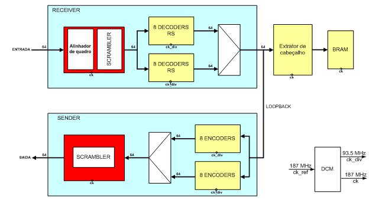
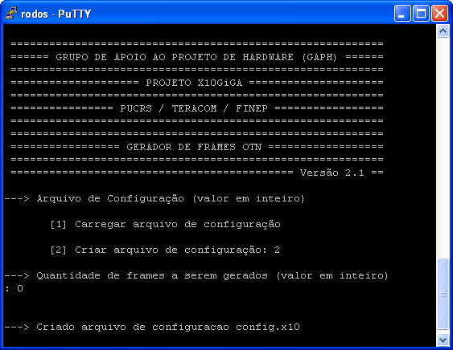
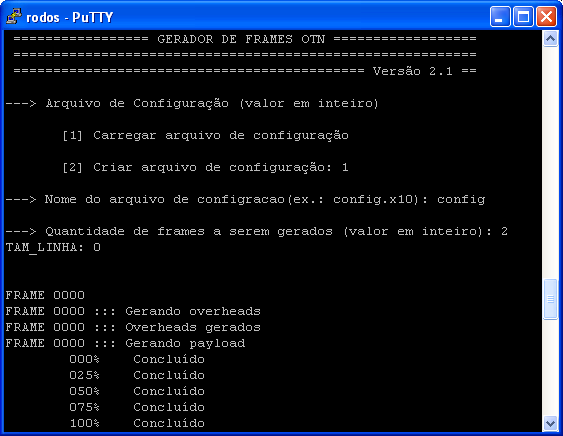
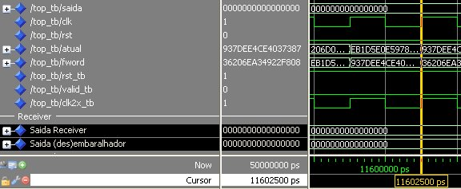
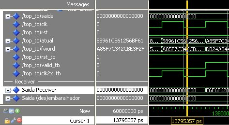

Menu
1. Sobre o projeto
O projeto x10Giga surgiu da parceria entre a TERACOM, empresa desenvolvedora de equipamentos de telecomunicação, e o Grupo de Apoio ao Projeto de Hardware (GAPH) da Faculdade de Informática (FACIN) da Pontifícia Universidade Católica do Rio Grande do Sul (PUCRS). O projeto visa desenvolver um transponder capaz de transmitir sinais SDH (Synchronous Digital Hierarchy) e Gigabit Ethernet sobre redes do tipo OTN (Optical Transport Network) com enlaces ópticos em longas distâncias. O desenvolvimento será em protótipos de hardware que permitirão realizar a depuração e a validação de todos os módulos implementados.
2. Cronograma
O andamento das tarefas pode ser visualizado aqui: cronograma
3. Documentação gerada pela equipe TERACOM
- Functional Description - x10Giga: Descrição funcional, incluindo a interface com o processador MicroBlaze.
- Functional Description - OTN Framer: Inferface do cliente.
- PLL: Recuperação de Relógio: Relação entre o PLL e a interface com o cliente.
- Datasheet - OTN Framer: Descrição do protocolo OTN com os registradores.
- Datasheet - x10Giga Programmable Logic: Descrição detalhada dos registradores.
- Summary - OTN Alarms: Resumo dos registradores contendo alarme.
- Functional Description: MII Interface
- MII Interface
- Functional Description: UART Debug
- Interface com o Cliente
- Manual de Instalação da Máquina Virtual
- Guia de Utilização de Scripts LUA
- Cadastro e Utilização CVN TERACOM
4. Documentação gerada pela equipe PUCRS
4.1. Módulos para Recepção e Transmissão de Frames
O documento abaixo apresenta a descrição detalhada dos frames OTN, assim como a descrição dos módulos: Alinhador, Embaralhador/Desembaralhador, Extrator de cabeçalho: TCC-Framer
4.2. Reed-Solomon
O desenvolvimento dos circuitos de detecção e correção de erros é detalhado no documento: TCC-Reed-Somomon
4.3. Módulos para Inserção e Recepção de Carga Útil
Desenvolvimento de Módulos de Hardware para extração e inserção de carga útil 10 gigabit ethernet em quadros OTN: Proposta-TCC-Carga-Util
4.4. Apresentação
A apresentação do x10Giga contém um descrição detalhada dos módulos do projeto.
5. Esquemático da Placa do Projeto x10Giga
6. Organização do x10Giga
Visando o trabalho em equipe e uma boa organização do projeto os arquivos estão sendo mantidos em um repositório SVN. Para acesso ao repositório usa-se qualquer cliente subversion. O cliente recomendado é o TortoiseSNV e pode ser baixado aqui: TortoiseSVN
O endereço de acesso ao repositório do projeto é (acesso pela PUCRS dentro da rede da FACIN):
svn://naxos/x10
O acesso ao repositório também pode ser feito remotamente como segue abaixo:
svn://201.54.139.40/x10
Os arquivos do repositório do projeto estão organizado da seguinte forma:

Segue uma breve explicação de cada uma das pastas a cima:
| DIRETÓRIOS | DESCRIÇÃO |
|---|---|
| AETest | Software utilizado para enviar e receber dados da MainBus |
| Framer | TCC: Módulos para recepção e transmissão de frames |
| Geraframes | Software utilizado para geração de frames |
| MainBus | Módulo usado para interfacear o x10Giga com uma interface PCI |
| Reed-Solomon | TCC: Módulos de Detecção e correção de erros |
| x10Giga | Diretório principal de desenvovimento do projeto |
Segue a descrição de cada um dos diretórios do projeto:
| DIRETÓRIOS | DESCRIÇÃO |
|---|---|
| tags | Versoes lançadas |
| x10Giga-v0.0 | Versão inicial do projeto |
| trunk | Diretório principal de desenvovimento |
| Constraints | Arquivos de regras para prototipação |
| Documentacao | Documentação do projeto |
| HDL | Arquivos fonte |
| Client | HDLs do cliente |
| Global | HDLs globais |
| Interface-SE | HDLs da interface com o software embarcado |
| Receive | HDLs do receive |
| Send | HDLs do send |
| Simulacao | Script e arquivos para simulação |
| Client | Arquivos necessários para simulação do cliente |
| Interface-SE | Arquivos necessários para simulação da interface com o software embarcado |
| Sintese | Script para síntese do projeto |
| Testbench | Arquivos fonte de teste |
| Client | HDLs de testbench do cliente |
| Interface-SE | HDLs de testbench da interface com o software embarcado |
Descrição dos VHDls do projeto:
| HDL | Descrição |
|---|---|
| x10_top.vhd | Entidade TOP do projeto |
| HDL/Client | Descrição |
| extratorPayload.vhd | Extrator de carga útil |
| extratorPayload_asincFifo.vhd | Fila assíncrona do tipo FIFO |
| extratorPayload_deslocador.vhd | Deslocador |
| extratorPayload_justCtrl.vhd | Controle de justificativas |
| extratorPayload_votacao.vhd | Contabiliza votos para justificativa |
| HDL/Global | Descrição |
| dcm_ise.vhd | Digital clock manager |
| top_frame_fec_se.vhd | TOP frame receive |
| x10_conv_pkg.vhd | Conversões |
| x10_global.vhd | Constantes globais e registradores |
| HDL/Interface-SE | Descrição |
| banco_reg.vhd | Banco de registradores |
| extrator.vhd | Extrator |
| interface_se.vhd | Interface com o software embarcado |
| HDL/Receive | Descrição |
| alinhador.vhd | Alinhador |
| assinatura.vhd | Gera assunaturas |
| decoder_rs.vhd | Decodificador Reed Solomon |
| fieldTable.vhd | Field table |
| framer.vhd | Framer |
| rs_mult_generic.vhd | Multiplicador Reed Solomon Genérico |
| scrambler.vhd | Embaralhador |
| top_receive.vhd | TOP frame receive |
| HDL/Send | Descrição |
| encoder.vhd | Codificador |
| top_send.vhd | TOP receive |
7. x10Giga-v0.0
- Transponder x10Giga em loop-back (sem cliente):

A figura acima ilustra a versão inicial do projeto, mostrando a integração dos módulos desenvolvidos. O Framer contém o módulo alinhador de quadros e o desembaralhador. O módulo alinhador de quadros é responsável por alinhar os quadros utilizando-se da seqüência de alinhamento. Os módulos embaralhador e desembaralhador são responsáveis por embaralhar e desembaralhar os dados, de forma que não ocorram longas seqüências de 0s ou de 1s, o que garante uma suficiente troca de estados dos bits facilitando a regeneração do relógio e evitando uma possível repetição da seqüência de alinhamento. O módulo de extração dos cabeçalhos é utilizado para extrair o conteúdo dos cabeçalhos possibilitando a identificação de falhas, alarmes, tipo de dado transportado, origem e destino contidos nos quadros OTN G709. Os decoders utilizam-se do FEC para corrigir eventuais erros de transmissão aplicando o algoritmo Reed-Solomon. Já o módulo encoder gera o overhead do FEC.
A versão incial do projeto pode ser acessada pelo SVN utilizando o endereço:
svn://naxos/x10/x10Giga/tags/x10Giga-v0.0
Pode-se também fazer o download da mesma: x10Giga-v0.0.zip
8. Geração de Frames
O geraframes foi desenvolvido para facilitar a criação de multiframes utilizados para as simulações e testes em FPGA. Este software foi desenvolvido para Linux.
Para compilá-lo basta digitar o seguinte comando:
$ make
Comando para remover arquivos gerados e limpar o diretório:
$ make clean
Comando para limpar apenas arquivos gerados:
$ make organize
Pra ustilizá-lo basta digitar:
$ ./geraframe
O geraframes pode ser utilizado através da interface iterativa ou por linha de comando. Detalhes da utilização do geraframes serão vistas a baixo.
8.1. Arquivo de Configuração
Para carregar os parâmetros utiliza-se um arquivo de configuração. As simulações mostradas no item 6 contêm os arquivos de configuração que as geraram, para referência. Um guia do mesmo pode ser gerado pela própria ferramenta, escolhendo a opção 2 no menu inicial.

Assim é criado um arquivo padrão (config.x10). O arquivo de configurações é composto por vários campos, contendo as opções e as possibilidades para cada parâmetro. Segue abaixo o detalhamento destes parâmetros:
| Campo | Parâmetro |
|---|---|
| FILE_OUT | Nome do arquivo de saída |
| BASE_OUT | Base dos arquivos gerados (HEX, BIN ou HEXBIN) |
| GEN_MEM_MS | HEX/BIN/NO |
| PRINT_AFTER | NO/OVERHEAD/PAYLOAD/FEC/ERRO/SCRAM |
| RAMB_OUT | Cria ou não os VHDLS das BlockRAMS(para testes emulados)(YES/NO) |
| ASSINATURA | Cria ou não a assinatura de cada 64 bits, (YES/NO) |
| TEST_SIGNAL | O conteúdo do Payload(PRBS/NULL) Null equivale a um payload de 0's |
| FEC | Escolhe se desejas calcular o FEC ou não (YES/NO) |
| NUMERRORS | Número de erros inseridos, 0 a 128 |
| TIPERRORS | Tipo de inserção de erros, (RAJADA/RANDOM) |
| ALIGNMENT | Tamanho do desalinhamento, 0 a 63 |
| SCRAMBLING | Embaralhamento do frame (YES/NO) |
| FAS | Colocar ou não o FAS (YES/NO) |
| MFAS | Calcular ou não o MFAS, o contador de multi-frame(YES/NO) |
| SM_TTI | NO/ex.: ## ## ## ## ## ... ## (0..255 hex bytes) |
| SM_BIP8 | NO/ex.: ## ## ## ## ## ... ## (0..255 hex bytes) |
| SM_ALARMS | NO/ex.: ## ## ## ## ## ... ## (0..255 hex bytes) |
| GCC0 | NO/ex.: #### #### #### ... #### (0..255 hex 2 bytes) |
| RES1 | NO/ex.: #### #### #### ... #### (0..255 hex 2 bytes) |
| RES2 | NO/ex.: ###### ###### ... ###### (0..255 hex 3 bytes) |
| TCM_ACT | NO/ex.: ## ## ## ## ## ... ## (0..255 hex bytes) |
| TCM6_TTI | NO/ex.: ## ## ## ## ## ... ## (0..255 hex bytes) |
| TCM6_BIP8 | NO/ex.: ## ## ## ## ## ... ## (0..255 hex bytes) |
| TCM6_ALARMS | NO/ex.: ## ## ## ## ## ... ## (0..255 hex bytes) |
| TCM5_TTI | NO/ex.: ## ## ## ## ## ... ## (0..255 hex bytes) |
| TCM5_BIP8 | NO/ex.: ## ## ## ## ## ... ## (0..255 hex bytes) |
| TCM5_ALARMS | NO/ex.: ## ## ## ## ## ... ## (0..255 hex bytes) |
| TCM4_TTI | NO/ex.: ## ## ## ## ## ... ## (0..255 hex bytes) |
| TCM4_BIP8 | NO/ex.: ## ## ## ## ## ... ## (0..255 hex bytes) |
| TCM4_ALARMS | NO/ex.: ## ## ## ## ## ... ## (0..255 hex bytes) |
| FTFL | NO/ex.: ## ## ## ## ## ... ## (0..255 hex bytes) |
| TCM3_TTI | NO/ex.: ## ## ## ## ## ... ## (0..255 hex bytes) |
| TCM3_BIP8 | NO/ex.: ## ## ## ## ## ... ## (0..255 hex bytes) |
| TCM3_ALARMS | NO/ex.: ## ## ## ## ## ... ## (0..255 hex bytes) |
| TCM2_TTI | NO/ex.: ## ## ## ## ## ... ## (0..255 hex bytes) |
| TCM2_BIP8 | NO/ex.: ## ## ## ## ## ... ## (0..255 hex bytes) |
| TCM2_ALARMS | NO/ex.: ## ## ## ## ## ... ## (0..255 hex bytes) |
| TCM1_TTI | NO/ex.: ## ## ## ## ## ... ## (0..255 hex bytes) |
| TCM1_BIP8 | NO/ex.: ## ## ## ## ## ... ## (0..255 hex bytes) |
| TCM1_ALARMS | NO/ex.: ## ## ## ## ## ... ## (0..255 hex bytes) |
| PM_TTI | NO/ex.: ## ## ## ## ## ... ## (0..255 hex bytes) |
| PM_BIP8 | NO/ex.: ## ## ## ## ## ... ## (0..255 hex bytes) |
| PM_ALARMS | NO/ex.: ## ## ## ## ## ... ## (0..255 hex bytes) |
| EXP | NO/ex.: #### #### #### ... #### (0..255 hex 2 bytes) |
| GCC1 | NO/ex.: #### #### #### ... #### (0..255 hex 2 bytes) |
| GCC2 | NO/ex.: #### #### #### ... #### (0..255 hex 2 bytes) |
| APS_PCC | NO/ex.: ######## ######## ... ######## (0..255 hex 4 bytes) |
| RES3 | NO/ex.: ############ ############ ... ############ (0..255 hex 6 bytes) |
| PSI | NO/ex.: ## ## ## ## ## ... ## (0..255 hex bytes) |
| JUSTIF_CTRL | NO/RANDOM/EXAUSTIVO |
8.2. Utilização por interface iterativa
Uma vez criado o arquivo de configuração, execute novamente o aplicativo e escolha a opção 1. Carregue o arquivo de configuração desejado e escolha a quantidade de frames que devem ser gerados.

O programa então informará o progresso da criação e finalizará mostrando todos os parâmetros escolhidos para gerar os frames.
8.3. Utilização por linha de comando
O geraframe possui alguns comandos de linha de comando para facilitar a criação de diversos arquivos de configuração diferentes e também a inserção do mesmo em algum possível script de configuração.
Para utilizar o geraframes por linha de comando:
$ ./geraframe <parametros>
Os possiveis agumentos são:
Parametros: -h : Mostra este help
-cf <arquivo-configuracao> : Seta arquivo de configuração
-qf <quantidade-de-frames> : Seta a quantidade de frames
8.4. Arquivos Gerados
O greaframes pode criar até três diretórios diferentes dependendo do arquivo de configuração.
| Diretório | Descrição |
|---|---|
| FILE_OUT | Arquivo texto contendo com os multiframes gerados (64 bits por linha) |
| RAMB_OUT | BRAMs em VHDL contendo as memórias preenxidas com os multiframes |
| ASSINATURA_OUT | Assinaturas de saída para futura comparação dos dados de teste |
Os arquivos gerados que são colocados no diretório FILE_OUT têm a seguinte sintaxe:
| Arquivo Gerado | Descrição |
|---|---|
| <nome>_bin<xxxx>.in | Arquivo de entrada BINARIO no dispositivo/software de testes |
| <nome>_hex<xxxx>.in | Arquivo de entrada HEXADECIMAL no dispositivo/software de testes |
| <nome>_hex<xxxx>.comp | Arquivo de entrada HEXADECIMAL esperado quando arquivo com erros é inserido |
| <nome><xxxx>.graf | Arquivo de DEBUG (visualização do(s) frame(s) userfriendly) |
Onde o <nome> é o nome do arquivo passado pelo campo FILE_OUT do arquivo de configuração, o <xxxx> é o número do arquivo caso o geraframes seja executado multiplas vezes.
9. Simulação
Para simulação usa-se o simulador Modelsim com as bibliotecas da Xilinx.
Um dos scripts usado para simulação é, por exemplo, topA.do.
quit -sim vmap unisim <$XILINX/vhdl/mti_se/unisim> vmap simprim <$XILINX/vhdl/mti_se/simprim> vmap simprims_ver <$XILINX/verilog/mti_se/simprims_ver> vmap unisims_ver <$XILINX/verilog/mti_se/unisims_ver> vmap xilinxcorelib <$XILINX/vhdl/mti_se/xilinxcorelib> vlib work ################################################################################ ################################################################################ # x10Giga (Projeto propriamente dito) #vcom -work work ../../HDL/x10_assinatura.vhd vcom -work work ../../HDL/x10_alinhador.vhd vcom -work work ../../HDL/x10_scrambler.vhd vcom -work work ../../HDL/x10_framer.vhd vcom -work work ../../HDL/fieldTable.vhd vcom -work work ../../HDL/rsmult_generic.vhd vcom -work work ../../HDL/decode.vhd vcom -work work ../../HDL/encode.vhd vcom -work work ../../HDL/frame_receive.vhd vcom -work work ../../HDL/frame_send.vhd vcom -work work ../../HDL/dcm_ise.vhd # TOP x10Giga (Top diferente do TOP PRINCIPAL) vcom -work work ../../Testbench/CasoA/top_frame_fec.vhd # Compila o Testbench vcom -work work ../../Testbench/CasoA/tb_topA.vhd ################################################################################ ################################################################################ vsim -t 1ps -lib work top_tb radix hexadecimal do wave.do run 3 ms
O script compila as partes essenciais do projeto junto com o seu respectivo testbench.
Para a simulação do projeto foram criados quatro casos de testes. Cada um destes casos utiliza um script igual ao mostrado acima, mas com um testbench tb_top.vhd diferente. Estes casos serão comentados a seguir.
Depois de compilados os arquivos, é simulado o tb_top.vhd que por sua vez carrega o seu respectivo arquivo de entrada (casoA.txt, casoB.txt, etc) criado através do geraframes.
Uma vez finalizada a simulação, o script abre um waveform e salva um arquivo output_dec_.txt contendo toda a saída (inclusive todos os dados de antes e depois das transmissões), lembrando que os dados da saída estão embaralhados.
O arquivo de saída pode ser facilmente comparado com as entradas utilizando ferramentas como winmerge.
Os diretórios necessários para as simulações dos quatro casos de teste descritos a seguir pode ser vista no arquivo compactado do projeto ou com o seguinte arquivo simplificado: casos de teste
Como simular: Para simular, deve-se entrar no diretório referente ao caso de teste, como por exemplo:
./x10Giga/Simulacao/CasoA/
Clicar em simula-v<x.x>.bat. Se o script não funcionar, deve-se abrir o modelsim, e mudar o diretório corrente para o diretório mostrado acima.
Digite no prompt "do topA.do", espere a simulação terminar e veja os resultados no waveform ou no arquivo de saída criado (outputA.out). Este é um teste muito longo, demorando aproximadamente 3 ms para acabar (resultando em horas de simulação). Uma vez terminada a simulação, o waveform será aberto, contendo sinais de interesse para entender o funcionamento dos módulos.
9.1. Caso A
Objetivo: Testar a robustez do algoritmo para transmissões de longa duração, como terá de suportar no mundo real.
Arquivo de entrada: Este caso de teste simula uma longa série de multi-frames, 258, com payload gerado através de uma seqüência PRBS (Pseudo Random Bit Stream), sem erros, perfeitamente alinhados utilizando embaralhamento.
O MFAS vai de 0 a 255, este caso testa apenas se consegue passar mais de 255 frames.
9.2. Caso B
Objetivo: Este caso de teste será utilizado para demonstrar a eficiência do FEC. Com 128 erros tem-se o pior caso do FEC. Podemos ver na simulação que todos os erros são corrigidos, o sinal Saída (des)embaralhador mostra os erros e a Saída Receiver estes corrigidos.
Arquivo de entrada: 5 frames com payload composto de 0's, com 128 erros, alinhado e embaralhado.
Sinais de interesse: Aqui nos interessa o sinal Saída (des)embaralhador e Saída Receiver.

Podemos ver que o sinal não corrigido ((des)embaralhador) deveria conter apenas 0's mas contém alguns 1's no meio. Na saída do receiver, porém, estes erros foram corrigidos.
9.3. Caso C
Objetivo: Este caso de teste verifica a correção do desalinhamento, neste caso está desalinhado em 59 bits.
Arquivo de entrada: 5 frames. O payload é composto por 0's e sem erros. Como podemos ver no waveform e no arquivo de saída outputC.txt, o alinhamento é consertado.
Sinais de interesse: Aqui nos interessa o sinal Saída (des)embaralhador, módulo seguinte à correção do alinhamento.

Em casos de desalinhamento, o FAS aparece deslocado na palavra (nos casos de teste com 0's), porém na saída do receiver podemos ver que o FAS está começando corretamente alinhado com a palavra.
9.4. Caso D
Objetivo: Um teste mais abrangente, uma situação com desalinhamento e alguns erros através dos multiframes.
Arquivo de entrada: 10 frames com payload composto de 0's e com 30 erros distribuídos aleatoriamente.
10. Síntese
A síntese é realizada através da ferramenta ISE da Xilinx. Pode-se usar o ISE e suas ferramentas através da interface gráfica ou em modo texto com um script feito em batch/shell dependendo do sistema operacional.
10.1. Sintese por script
Desenvolvemos um script Batch (windows) para a sintese lógica e física do projeto: sintetiza-v1.3.bat. Usamos a versão mais 10 do ISE com as últimas atualizações.
A interface do VHDL com o hardware e outras configurações é feita com um arquivo de contraints. O arquivo de constraints que usamos para a versão incial do projeto pode ser visto aqui: xc4vfx100-ff1152-11.ucf
O arquivo de constraints foi modificado a partir do arquivo fornecido pela Dini Group, empresa que desenvolveu a placa que usamos para síntese. Pode-se notar que a interface que faz o acesso a PCI está mapeada em pinos determinados. Na abordagem inicial configuramos apenas a frequência e o comportamento físico de alguns pinos como o de clock.
OBS.: O projeto está sendo sintetizado para um FPGA da Xilinx. As caracterísitcas deste FPGA podem ser vistas a baixo:
FAMÍLIA : VIRTEX4 DEVICE : XC4VFX100 PACKAGE : FF1152 SPEED : -11
10.2. Relatório Área
O relatório completo de área encontra-se aqui: Relatório de Área
| Logic Utilization | Used | Available | Utilization Note(s) |
|---|---|---|---|
| Number of Slice Flip Flops | 20,496 | 84,352 | 24% |
| DCM autocalibration logic | 7 | 20,496 | 1% |
| Number of 4 input LUTs | 51,690 | 84,352 | 61% |
| DCM autocalibration logic | 4 | 51,690 | 1% |
| Logic Distribution | |||
| Number of occupied Slices | 30,751 | 42,176 | 72% |
| Number of Slices containing only related logic | 30,751 | 30,751 | 100% |
| Number of Slices containing unrelated logic | 0 | 30,751 | 0% |
| Total Number of 4 input LUTs | 52,537 | 84,352 | 62% |
| Number used as logic | 51,690 | - | - |
| Number used as a route-thru | 818 | - | - |
| Number used as 16x1 RAMs | 1 | - | - |
| Number used as Shift registers | 28 | - | - |
| Number of bonded IOBs | 135 | 576 | 23% |
| Number of BUFG/BUFGCTRLs | 3 | 32 | 9% |
| Number used as BUFGs | 3 | - | - |
| Number used as BUFGCTRLs | 0 | - | - |
| Number of FIFO16/RAMB16s | 24 | 376 | 6% |
| Number used as FIFO16s | 0 | - | - |
| Number used as RAMB16s | 24 | - | - |
| Number of DCM_ADVs | 1 | 12 | 8% |
| Total equivalent gate count for design | 2,069,663 | - | - |
| Additional JTAG gate count for IOBs | 6,480 | - | - |
10.3. Relatório Timing
O relatório completo de timing, gerado pela ferramenta de sintese (XST) pode ser visualizado aqui: XST Report
Timing Summary
Speed Grade: -11
Minimum period: 3.719ns (Maximum Frequency: 268.890MHz)
Minimum input arrival time before clock: 1.198ns
Maximum output required time after clock: 5.260ns
11. Sobre este documento
Este documento foi gerado usando o programa TXT2TAG. Para saber mais sobre o programa visite a página do programa. O programa pode ser baixado diretamente (para windows) com o link: txt2tags-2.3-sa-ptbr.exe
Para facilitar a geração da página é usado o seguinte script: TXT2HTML.bat e o arquivo fonte é o index.tst
Mais informações sobre o TXT2TAGS: